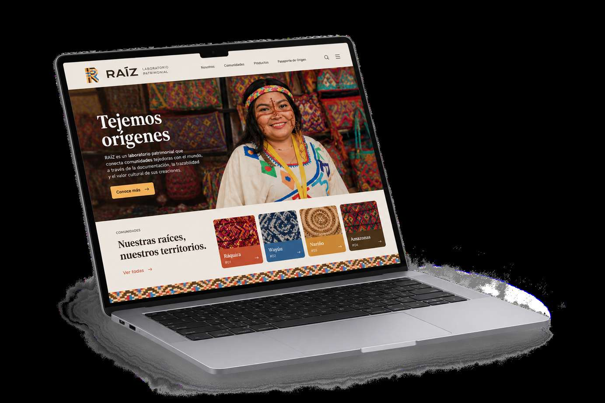

Pérdida de saberes
La falta de relevo generacional amenaza la continuidad de los conocimientos artesanales.
RAÍZ es un laboratorio de marcas patrimoniales que transforma los oficios artesanales colombianos en marcas con identidad, historia y presencia digital, preservando su tradición y ampliando su alcance comercial.

Muchos artesanos colombianos enfrentan dificultades para documentar sus oficios, construir una identidad de marca y acceder a canales propios de comercialización. La falta de herramientas digitales, capital y reconocimiento limita el alcance de sus productos y pone en riesgo la continuidad de los saberes tradicionales.
La falta de relevo generacional amenaza la continuidad de los conocimientos artesanales.
Muchos oficios carecen de una marca propia que reconozca su historia y singularidad.
La ausencia de canales digitales dificulta la venta directa y aumenta la dependencia de intermediarios.
Documentamos la historia del artesano, construimos una identidad visual, diseñamos empaques y desarrollamos una propuesta de presencia digital para conectar el valor cultural de cada oficio con nuevas oportunidades comerciales.
Construimos sistemas visuales singulares: logotipos, paletas de color, tipografía y aplicaciones gráficas que respetan la cosmogonía y la dignidad del artesano.
Documentamos la memoria viva del territorio, la procedencia de las materias primas y las técnicas ancestrales transmitidas de generación en generación.
Proponemos herramientas y canales contemporáneos para que cada micro-marca artesanal sea visible, cuente su historia y se vincule de forma directa con su público.